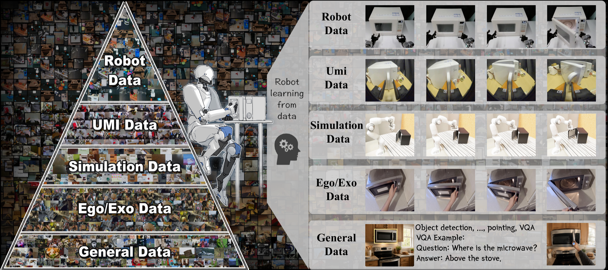

Task taxonomy
Each row maps one dataset split to a concrete task family, so similar skills are easy to compare.

Real Robot Data + Simulation Data
A compact index for organizing robot datasets by task, embodiment, observation space, action space, environment count, and download format.
Overview
Indexing Principles
Each row maps one dataset split to a concrete task family, so similar skills are easy to compare.
Robots, sensors, observations, and actions are listed explicitly instead of hidden in project notes.
Real robot and simulation data sit in one table while remaining filterable by source type.
Tasks
Dataset Table
| Task | Data Links | Observations | Actions | # Demos | # Envs | License |
|---|
Data Format
{
project: "InternData-A1",
source: "simulation",
task: "close_the_electriccooker",
dataLinks: { HuggingFace: "https://..." },
observations: ["RGB", "Proprio", "Language"],
actions: ["End Effector Pose", "Gripper"],
demos: "TBD",
envs: "TBD",
license: "CC BY-NC-SA 4.0"
}